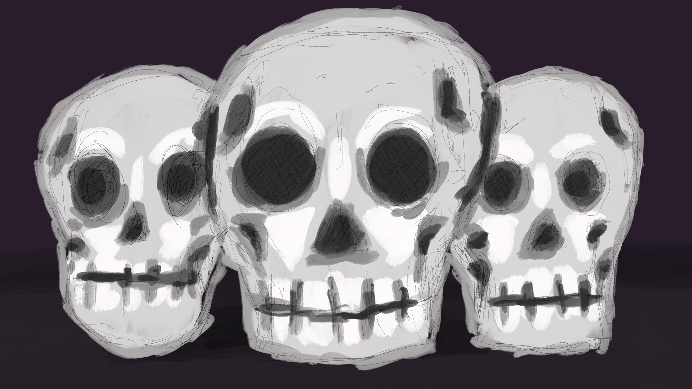
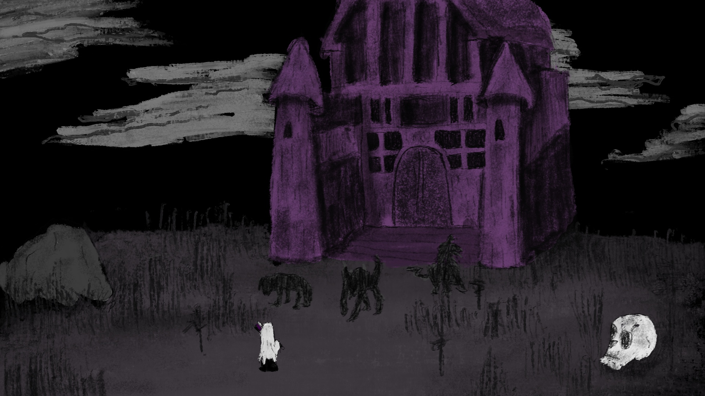

HOME
แฟ้มประวัติผู้สร้าง (Creator Card)
TANAPUN WARRAPUN (Tanapun)
Creative Media Artist & Game Developerมุ่งมั่นสร้างสรรค์โลกเสมือนจริงผ่านงานศิลปะดิจิทัลและเทคโนโลยีเกม เชี่ยวชาญและให้ความสนใจในด้าน Digital Art, Concept Art, Game Art และ Game Development ผสมผสานจินตนาการทางสุนทรียศาสตร์เข้ากับกระบวนการพัฒนาเกมเชิงเทคนิค
Discipline & Skill Deck
การ์ดทักษะและความสนใจหลักในสายงานสร้างสรรค์
Digital Art & Illustration
การวาดและลงสีภาพดิจิทัล การจัดองค์ประกอบภาพ แสงและเงา การถ่ายทอดอารมณ์และสไตล์ภาพสำหรับการเล่าเรื่องเชิงทัศนศิลป์
Concept Art & World-Building
การออกแบบตัวละคร (Character Design), พร็อพ (Props) และบรรยากาศฉาก (Environment Art) เพื่อเป็นต้นแบบในขั้นตอน Pre-production
Featured Artifact Cards
ตัวอย่างผลงานที่จัดวางบนกระดานสำรวจ

Digital Illustration Project
งานวาดภาพดิจิทัลเน้นแสงเงาและบรรยากาศแบบกึ่งสมจริง

Environment Concept Design
การออกแบบฉากทัศน์และสภาพแวดล้อมสำหรับโลกในเกมแฟนตาซี
สนใจร่วมงานหรือพัฒนาโปรเจกต์สร้างสรรค์?
ยินดีต้อนรับทุกโอกาสในการร่วมงาน ฝึกงาน หรือพัฒนาโปรเจกต์เกมและดิจิทัลอาร์ตร่วมกัน